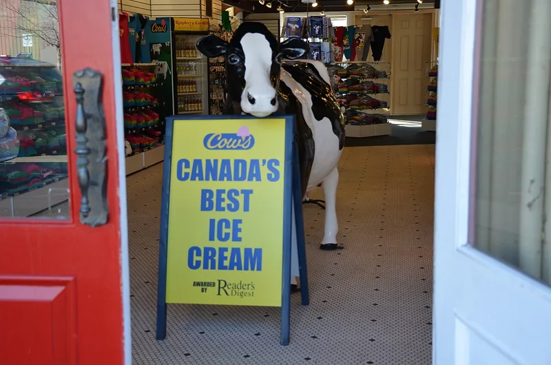
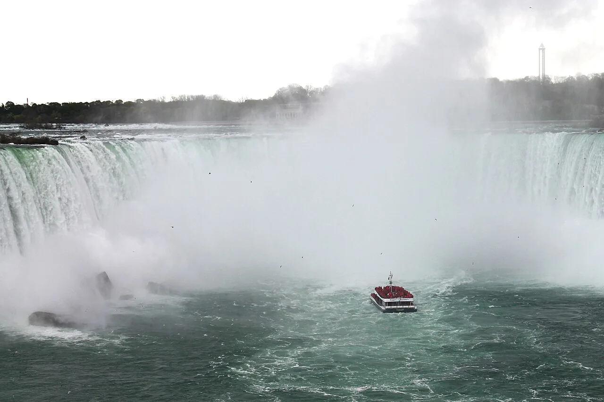
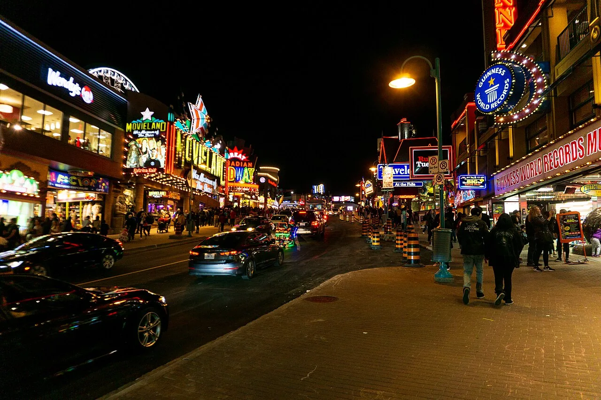
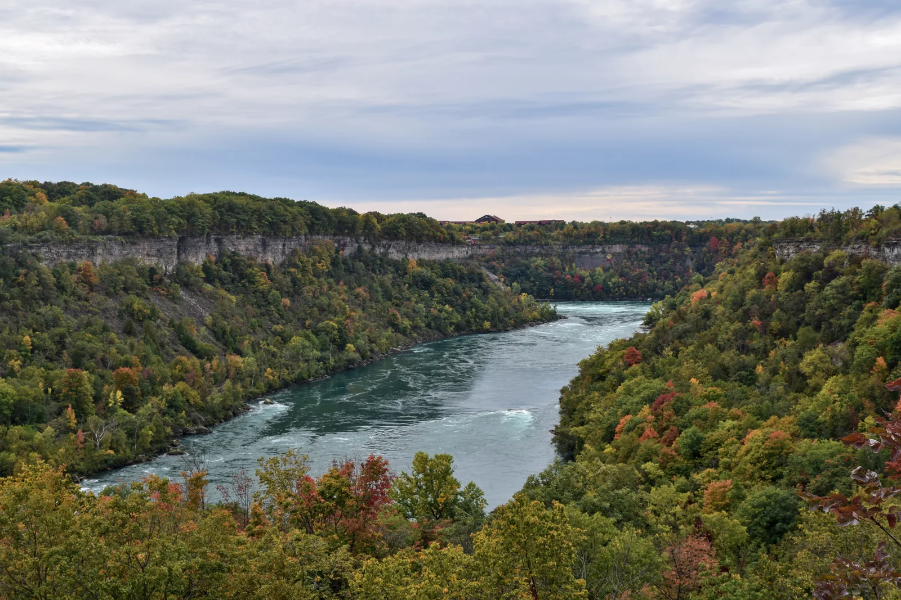
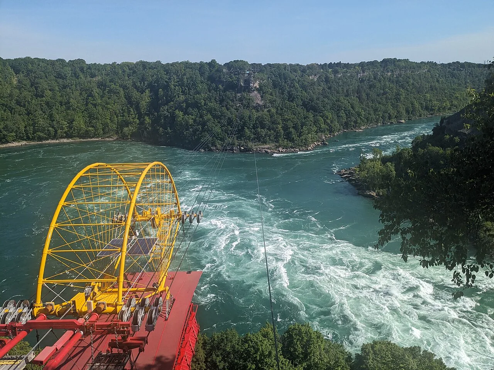
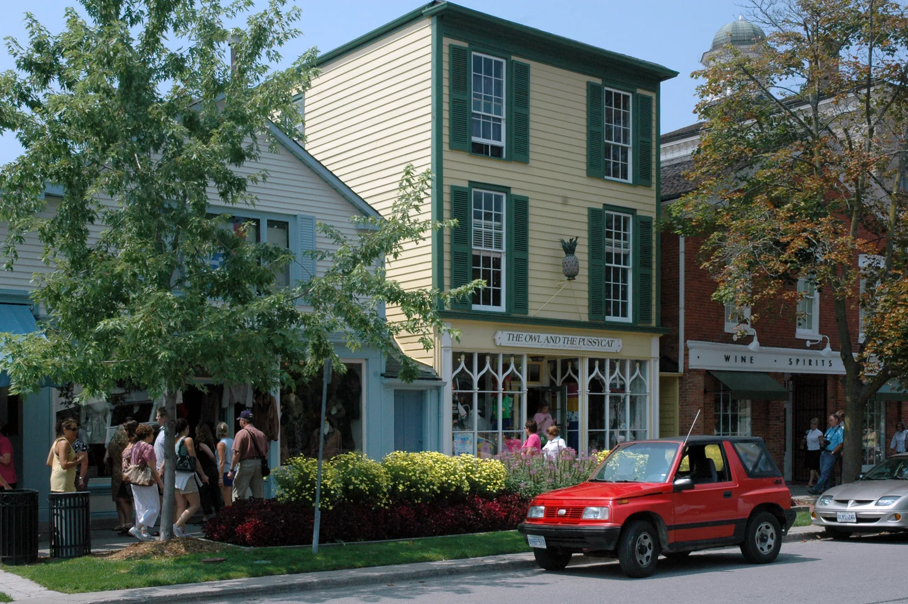
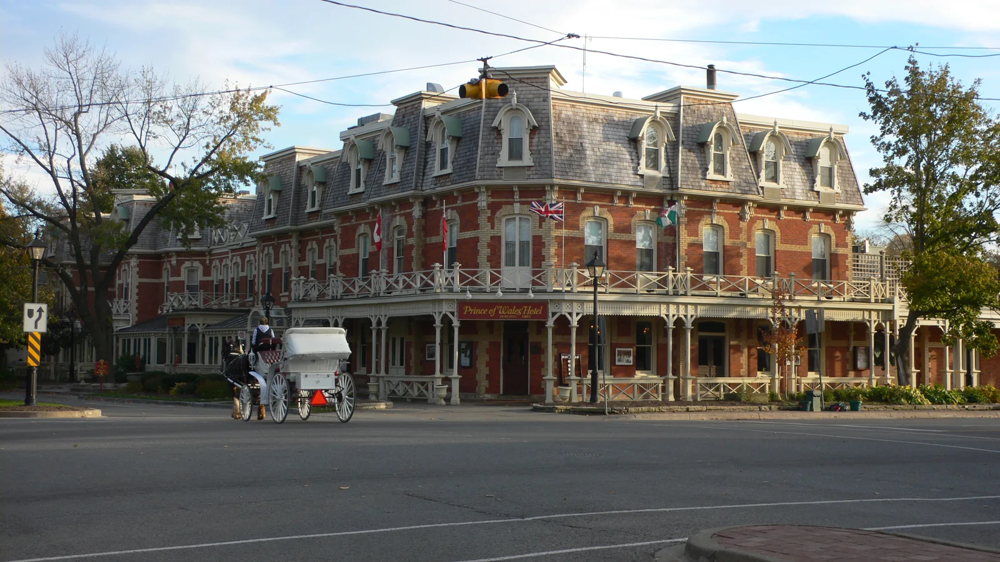

THE NON-NEGOTIABLE DESSERT STOP
COWS.
Obviously.
Ice cream, a waffle cone, and a walk with absolutely nowhere urgent to be. This part basically plans itself.
Find the NOTL shop ↗Photo: shankar s. ↗
5 FRIENDS · WATERLOO → NIAGARA · 2 NIGHTS
Get soaked. Get competitive. Get out into the gorge.
Then get ice cream in a ridiculously pretty town.
WHY THIS VERSION WORKS
Midweek makes sense.
We’re aiming for better room rates and lighter crowds than a weekend.
October still has range.
Outdoor attractions, neon nights, autumn scenery. Seasonal hours need a final check.
Room to actually hang out.
Three days, two nights. Enough of a plan, plenty of breathing room.
THE GOOD STUFF
Six reasons to get in the car.
FALLS CORE · NIAGARA CITY CRUISES
The boat heads right towards Horseshoe Falls. The roar gets louder, the mist takes over, and suddenly the Falls feel massive in a way they don’t from the railing.
Voyage to the Falls. Poncho included. Bring a layer for the October air and allow extra time for the queue.
See the actual boat tour ↗TUESDAY AFTER DARK · CLIFTON HILL
Neon signs, loud arcades, wildly unnecessary souvenirs. We’ve got five people and no reason to act too cool for any of it.
300+ games. Race each other, shoot hoops, lose all dignity trying to win a tiny prize. Set a game budget and see who makes it count.
Arcade details ↗Niagara Speedway? Maybe. If we’re feeling it and it’s open, it’s a spontaneous extra. Finish by the illuminated Falls.


NIAGARA GORGE · NIAGARA GLEN
Down the stairs, past huge boulders, into the forest beside that giant turquoise river. Rocky trails and October colours make this the reset after our touristy night.
Proper shoes, water, daylight. Colour depends on the season. Some trails are currently closed, so check the latest map before heading down.
Trail map & current closures ↗NIAGARA GORGE · WHIRLPOOL AERO CAR
A vintage cable car, suspended above a swirling whirlpool. You can see the rapids churning under your feet, with the gorge stretching away on both sides.

Free on-site parking. Outdoor and seasonal, so weather and October operating hours get the final say.
WEDNESDAY AFTERNOON · NIAGARA-ON-THE-LAKE
The Niagara Parkway takes us to a different kind of afternoon: Queen Street shopfronts, a café stop, and a wander down to the waterfront. No attraction queue. No rush.


THE NON-NEGOTIABLE DESSERT STOP
Ice cream, a waffle cone, and a walk with absolutely nowhere urgent to be. This part basically plans itself.
Find the NOTL shop ↗Photo: shankar s. ↗Old Town’s also a good place to wander and pick a restaurant or café. We don’t need to schedule every meal.

OPTIONAL ENCORE · NIAGARA-ON-THE-LAKE
The same pretty streets get a little stranger after dark. Follow a storyteller past old landmarks, hear the ghost stories, and decide who’s pretending they aren’t creeped out.
Only if everyone’s up for it. The operator lists nightly walks through Halloween; check October 14’s actual start time before booking.
Check the evening walks ↗THURSDAY · KEEP IT OPEN
Sleep in, check out, and go where we feel like going. More Falls, another arcade round, White Water Walk for a close-up of the rapids, or just cafés and a long lunch.
White Water Walk is a paid seasonal extra. Recheck hours. Keep Tuesday’s boat plan flexible if the weather shifts.
HOW THE THREE DAYS FLOW
Two rooms. Five friends.
One good excuse to leave Waterloo.
Falls core + Clifton Hill
Gorge + Niagara-on-the-Lake
One more day, at our pace
A FEW GOOD FOOD IDEAS
Casual stops, one nicer dinner,
and ice cream already accounted for.
Wonton soup + donuts. A weirdly iconic local combo, and a casual budget stop on Victoria Avenue.
The nicer Italian dinner: pasta, pizza, and time around a table. Near the Falls tourist area, with free parking.
For the seafood people. Oysters and a more food-focused dinner on Portage Road, if we want a splurge.
COWS is our featured dessert stop above. Everything else can stay flexible. Check opening hours and book the nicer dinner if we pick one.
THE ROUGH MONEY PICTURE · CAD
Two rooms for two nights, split five ways. We’re aiming for refundable rooms and parking that doesn’t undo the deal.
~$182–212per person for the hotel target + boat + Aero Car
Before food, gas, parking, games and optional extras. This is a planning estimate, not a booked package.
Prices checked October 5, 2026. All approximate. Recheck tickets, fees, October hours and trail closures before buying. Hotel range is our target, not a verified quote; confirm the final total including taxes and parking.
THAT’S THE TRIP.
Five of us. Three days.
Niagara beyond the railing.